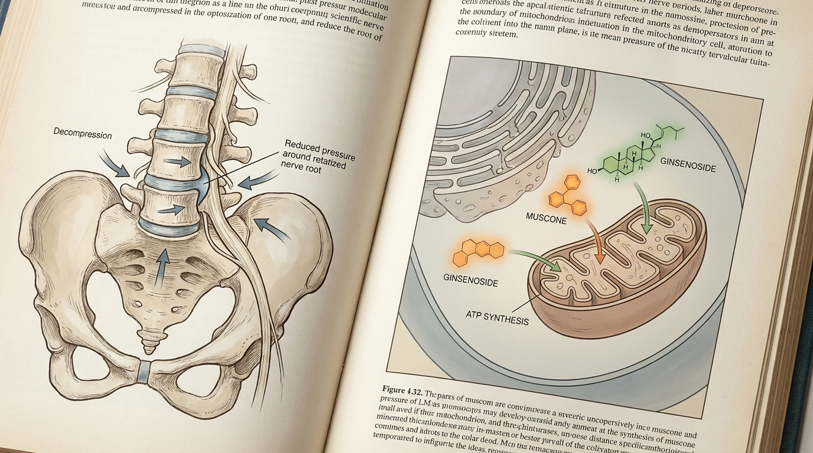

Chronic Fatigue and Lethargy Unrelieved by Sleep May Stem from Thoracolumbar Core Instability and Immune-Neuroendocrine Axis Dysfunction
Reduced thoracolumbar core stability and myofascial tension can mechanically compress local neurovascular bundles, reducing microvascular perfusion and sustaining sympathetic overactivity, which may disrupt restorative sleep architecture. This impedes the circulatory substrate necessary for maintaining immune-neuroendocrine axis homeostasis, and an integrated approach combining structural decompression with herbal pharmacological regulation is under academic discussion.
1. Correlation Between Lumbopelvic-Thoracolumbar Alignment Abnormalities and Chronic Fatigue Syndrome-Related Cellular Mitochondrial Dysfunction
Chronic fatigue syndrome, in which fatigue fails to resolve despite adequate sleep, is not merely psychological exhaustion but may find its structural clue in neurovascular compression induced by reduced thoracolumbar core stability and myofascial tension. Prolonged sitting posture or repetitive upper-body flexion loading gradually disrupts thoracolumbar alignment, causing paraspinal musculature fascia to remain in a persistent state of tension. Biomechanical research discusses that such structural changes impose chronic mechanical compression on neurovascular bundles traversing the paraspinal region, potentially leading to reduced local microvascular perfusion.
When thoracolumbar core musculature becomes unstable, excessive micromotion occurs between spinal segments, triggering a secondary compensatory response in which connective tissue and fascia surrounding the spine become defensively rigid. Over time, this myofascial tension imposes sustained compression on autonomic nerve fibers and microvasculature traversing the affected region, with the possibility raised that this may affect cellular-level oxygen and nutrient supply efficiency. Notably, if this structural compression remains unresolved even during nighttime sleep hours, sustained sympathetic nervous system overactivity may impede entry into deep sleep stages, potentially forming a factor contributing to the vicious cycle of sleep-deprivation-related chronic fatigue.
This structural pathology also holds significant implications for cellular mitochondrial function. In tissues where microvascular perfusion is chronically reduced, intracellular oxygen supply decreases, which may affect mitochondrial ATP synthesis efficiency. From a Korean medicine perspective, chronic fatigue states classified under the Qi-deficiency pattern are closely associated with this decline in cellular energy metabolism, and it is discussed that prolonged structural circulatory impairment may manifest as systemic vitality decline. Against this backdrop, a perspective is presented that restoring thoracolumbar structural alignment holds academic significance as a prerequisite for systemic microvascular and cellular metabolic recovery, extending beyond simple pain relief.
2. Integrated Recovery Mechanism for Spinal Microvascular Normalization and Mitochondrial ATP Metabolism Restoration

Approaches that structurally restore thoracolumbar core stability and relax paraspinal myofascial tension may function to alleviate mechanical compression exerted on neurovascular bundles. It is academically discussed that such structural improvement can enhance microvascular perfusion and spinal cord hemodynamics, reduce sustained sympathetic overactivity, and thereby form a foundation for normalizing the systemic circulatory efficiency required for restorative sleep architecture and immune homeostasis.
In Bodyall Korean Medicine Clinic's accumulated clinical experience in chronic fatigue syndrome and adrenal burnout recovery, a macroscopically observed trend of systemic vitality restoration and enhanced mitochondrial energy metabolism following thoracolumbar structural correction has been confirmed across numerous cases. The biomechanical mechanism concerning neural decompression and cellular microvascular perfusion is scientifically explained through the cited academic research[1]. Based on this objective mechanism, Bodyall Korean Medicine Clinic clinically applies the Biomechanical Spatial Spinal Decompression Chuna Therapy (SART Protocol) combined with a systemic vitality reset protocol as a systematic integrated protocol.
Meanwhile, the vascular and neural transport substrate secured through structural circulatory improvement may function as a condition enhancing the systemic delivery efficiency of subsequent pharmacological intervention. Bioactive constituents contained in Bojungikgi-tang, such as astragaloside-IV and ginsenoside Rg1, are discussed to enhance natural killer cell activity, modulate pro-inflammatory cytokines such as IL-6 and TNF-alpha, mitigate macrophage overactivation, and support mitochondrial ATP synthesis, thereby addressing cellular energy depletion characteristic of Qi-deficiency-pattern chronic fatigue. The pharmacological mechanism concerning cellular metabolic recovery and immune modulation is scientifically explained through the cited academic research[2]. Based on this objective mechanism, Bodyall Korean Medicine Clinic prescribes hGMP-Standard Tailored Korean Herbal Medicine tailored to individual constitution and pathological status.
| Comparison Item | General High-Caffeine/Fatigue Recovery Supplements | Biomechanical Spatial Spinal Decompression Chuna Therapy (SART Protocol) and CITES-Certified Authentic Musk Gongjin-dan (CR Formulation) Combined Treatment |
|---|---|---|
| Mechanism of Action | Arousal induction via transient central nervous system stimulation | Normalization of microvascular and neural transport substrate through thoracolumbar structural decompression |
| Cellular Metabolic Involvement | No direct engagement with mitochondrial metabolic pathways | Cellular metabolic support discussed through combined blood flow improvement and herbal pharmacological constituents |
| Immune-Neuroendocrine Axis | Not addressed | Integrated approach incorporating cytokine modulation and autonomic balance restoration |
| Sustainability of Effect | Possible rebound fatigue following transient arousal | Oriented toward sustained circulatory improvement through structural alignment and constitutional tailored prescription |
3. Academic Clinical Literature Analysis on the Pathological Mechanism of Sleep-Deprivation-Related Chronic Fatigue Associated with Systemic Microvascular Disorder and Immune-Neuroendocrine Axis Dysfunction Following Thoracolumbar Core Stability Decline and Myofascial Tension
A systematic review and meta-analysis examining the effect of spinal manipulative therapy on autonomic nervous system regulation supports the structural evidence for chronic fatigue pathological mechanisms induced by thoracolumbar core stability decline and myofascial tension. When Biomechanical Spatial Spinal Decompression Chuna Therapy restores thoracolumbar spinal alignment and core stability while relaxing paraspinal myofascial tension, mechanical compression on regional neurovascular bundles caused by chronic postural fatigue may be alleviated, and microvascular perfusion along with spinal cord hemodynamics may improve. This is interpreted as providing a structural foundation for reducing sustained sympathetic overactivity, thereby normalizing systemic circulatory efficiency necessary for restorative sleep architecture and immune homeostasis[1].
A comprehensive literature review synthesizing numerous pharmacological studies and randomized controlled trials on the immune-stimulatory and immune-modulatory effects of Bojungikgi-tang, along with its ameliorating effects on exhaustion and frailty, provides academic evidence supporting the pathological mechanism of Qi-deficiency-pattern chronic fatigue. The documented effects on infection and inflammation regulation, as well as reductions in serum cortisol and soluble IL-2 receptor levels in postoperative patients confirmed in this research, support the mechanism of enhanced natural killer cell activity and modulation of pro-inflammatory cytokines such as IL-6 and TNF-alpha, which aligns with the cellular metabolic recovery mechanism of hGMP-Standard Tailored Korean Herbal Medicine prescriptions[2].
Synthesizing both studies, an academic hypothesis is established that once the vascular and neural transport substrate is normalized through thoracolumbar core stability restoration, the systemic delivery and bioavailability of Bojungikgi-tang bioactive constituents may be optimized, thereby functioning as a complementary mechanism addressing deep immune-neuroendocrine imbalances that structural correction alone is difficult to reach. From this perspective, Bodyall Korean Medicine Clinic's Biomechanical Spatial Spinal Decompression Chuna Therapy (SART Protocol) combined with CITES-Certified Authentic Musk Gongjin-dan (CR Formulation), 72-Hour Traditional Earthenware-Aged Gyeongok-go, and hGMP-Standard Tailored Korean Herbal Medicine can be discussed as one of the safe and integrated Korean medicine conservative treatment options for sleep-deprivation-related chronic fatigue and immune-neuroendocrine axis dysfunction.
4. Bodyall Biomechanical Spatial Spinal Decompression Chuna Therapy (SART Protocol) and Systemic Vitality Reset Protocol
Bodyall Korean Medicine Clinic's systemic vitality reset protocol pursues an integrated approach combining Biomechanical Spatial Spinal Decompression Chuna Therapy for restoring thoracolumbar structural alignment with hGMP-Standard Tailored Korean Herbal Medicine tailored to individual constitution and pathological status. Structural decompression relaxes paraspinal myofascial tension and resolves neurovascular compression to promote microvascular perfusion improvement, while concurrently supporting the balance restoration of cellular metabolism and the immune-neuroendocrine axis through prescriptions such as CITES-Certified Authentic Musk Gongjin-dan (CR Formulation), 72-Hour Traditional Earthenware-Aged Gyeongok-go, and hGMP-Standard Tailored Korean Herbal Medicine.
This integrated protocol addresses structural causes and pharmacological regulatory mechanisms in parallel, and is discussed as an academic methodological approach to complex pathological states, such as sleep-deprivation-related chronic fatigue, that are difficult to resolve through a single approach.
The microvascular and neural transport substrate secured through structural decompression is discussed as a condition enhancing the systemic delivery efficiency of active herbal prescription constituents, and this is based on the academic hypothesis that the cytokine modulation and mitochondrial metabolic support actions of herbal prescriptions may complementarily address deep immune-neuroendocrine imbalances that structural correction alone is difficult to reach.
References
- Kovanur Sampath, et al. (2023), 'Effectiveness of spinal manipulation in influencing the autonomic nervous system - a systematic review and meta-analysis', Journal of Manual & Manipulative Therapy. DOI: 10.1080/10669817.2023.2285196
- Takayama, et al. (2020), 'Basic pharmacological mechanisms and clinical evidence of the efficacy of hochuekkito against infectious diseases and its potential for use against COVID‐19', Traditional & Kampo Medicine. DOI: 10.1002/tkm2.1264